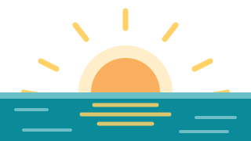
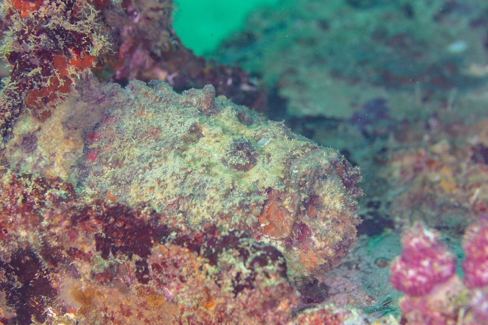
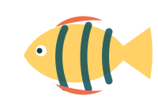
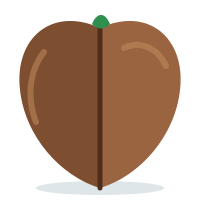
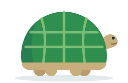
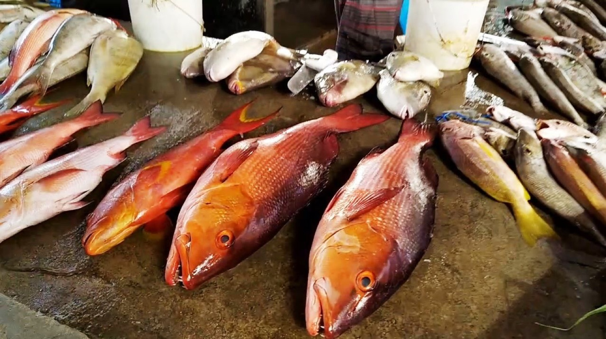
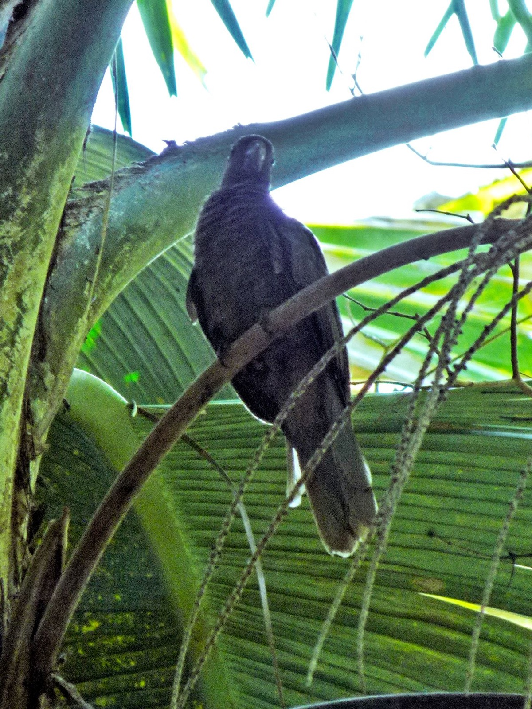

Kezdőlap
Kezdőlap
Beutazás

Magyar útlevéllel nem kell vízum, de az utazási engedély (Travel Authorisation) kötelező, és a beszálláskor is kérhetik. Minden más papír azért kell, hogy a határon és a bérautónál ne legyen fennakadás.
Utazási engedély
- Hol: kizárólag a hivatalos seychelles.govtas.com oldalon. A keresőben elöl álló „visa”-oldalak kb. 11 000–29 200 Ft30–80 €-t kérnek ugyanazért.
- Mikor: az érkezés előtti 30 napon belül, vagyis okt. 18-tól lehet beadni. Javaslat: okt. 20–25. között, hogy legyen idő javítani, ha valami elakad.
- Díj: kb. 3 700 Ft10 € + kezelési díj, összesen kb. 4 400 Ft12 €/fő.
- Kell hozzá: az útlevél adatoldala (fotó), egy friss szelfi, a járatszámok (QR678 / QR679), a szállás címe (Palm Holiday, Grand Anse, Praslin), bankkártya.
- A jóváhagyást (QR-kódos PDF) mentsd a telefonra, és nyomtasd ki.
A határon kérhetik
- Visszaútjegy (Kiwi e-jegy), szállásvisszaigazolás mindkét szállásról.
- Fedezet: kb. kb. 48 900 Ft150 $/fő/nap igazolása kérhető (bankkártya, készpénz).
- Az útlevél legyen érvényes a teljes tartózkodásra (hivatalos szabály). Javaslat: legalább 6 hónap és egy üres oldal.
- Belépéskor látogatói engedélyt (visitor's permit) adnak, legfeljebb 3 hónapra.
Repülés és átszállás Dohában
- Kiwi-foglalás: nézd meg, hogy mindkét utas adata szerepel-e; ha hiányzik, pótold. Utána kérd le a Qatar foglalási kódját (PNR), és a qatarairways.com „Manage booking” oldalán ellenőrizd az üléseket és a 20 kg-os feladott poggyászt mind a négy szakaszon.
- Ha mind a négy járat egy jegyen van, a csomag Bécsből Mahéig átmegy, és Dohában nem kell kilépni. Ha a Kiwi két külön jegyet vett, a csomagot ki kell venni. Ezt a Kiwi-oldalon ellenőrizd.
- Online utasfelvétel: az indulás előtt 48 órával nyílik.
- Powerbank: legfeljebb 2 db, egyenként legfeljebb 100 Wh. Csak a kézipoggyászban lehet, a fej feletti tárolóba nem teheted, és a fedélzeten nem töltheted vele a telefont (Qatar-szabály, 2026).
- Folyadék a kézipoggyászban: 100 ml-es tégelyek, átlátszó zacskóban. A naptej a feladott bőröndbe menjen.
Nyomtasd ki, és legyen meg a telefonon is
- Útlevél-másolat ×2 (külön tárolva)
- Utazási engedély ×2 (QR)
- Kiwi e-jegy és a Qatar PNR
- Szállás-visszaigazolások (Palm Holiday, Kempinski)
- Belföldi repülő- vagy kompjegyek
- Bérautó-visszaigazolások
- Biztosítási kötvény + a segélyvonal száma
- Jogosítvány (+ nemzetközi, ha van)
- Túrafoglalás (hajó, Chez Batista)
Tedd fel egy felhőbe is (pl. Google Drive). Ha elveszik a telefon, a másik telefonról is elérhető legyen.
Amit ne vigyetek ki, és amit ne hozzatok haza
- Drón: 200 g felett regisztrálni kell, Mahé és Praslin nagy része reptéri zóna. Inkább maradjon otthon.
- Coco de mer: csak hivatalos eladótól vegyél, engedéllyel és hologramos címkével, különben a reptéren elveszik.
- Kagyló, korall, teknőspáncél-termék: tilos.
- Műanyag zacskó: 2017 óta tilos, vigyetek vászontáskát.
Jogosítvány
A magyar, latin betűs EU-s jogosítványt a bérbeadók elfogadják. A nemzetközi jogosítvány a kormányablakban kiváltható, és vita esetén (rendőr, biztosító) jól jöhet. Vidd mindkettőt.
Egészség, szúnyogok, nap

UV-index
„Nagyon magas” vagy „extrém”. Felhős időben is égetni fog. 11 és 15 óra között árnyékban legyetek.
Szúnyog
2026 elején járvány volt, a CDC (az amerikai járványügyi hivatal) február 5-én 2. szintű figyelmeztetést adott ki. Malária nincs.
Segélyhívó
Mentő, rendőr, tűzoltó. Kórház: Victoria (Mahé) és Baie Ste Anne (Praslin).
Szúnyog elleni védekezés
A dengue- és a chikungunya-szúnyog nappal csíp, főleg kora reggel és késő délután, árnyékos, növényzettel benőtt helyeken: Vallée de Mai, Veuve rezervátum, a túraösvények, a strandok mögötti fás sáv.
- Riasztószer: 30–50% DEET vagy 20% icaridin (pl. Autan Tropical, Anti-Brumm Forte). A naptej után kend fel, és pár óránként ismételd.
- Este és túrán könnyű, világos, hosszú ujjú ruha.
- A szobában klíma vagy szúnyogháló; a Palm Holiday-be vigyetek egy konnektoros párologtatót.
- Ha hazaérkezés után 2 héten belül lázas leszel, mondd el az orvosnak, hol jártál.
Oltások
Kötelező oltás nincs. Ajánlott a hepatitis A és a hastífusz, a hepatitis B megfontolandó. Ha még nincs meg, most beszélj egy oltóközponttal, mert a hepatitis A-nak 2 hét kell, hogy hasson. Sárgaláz-igazolás csak fertőzött országból érkezőnek kell; a dohai átszállás nem számít annak.
Napvédelem, ami tényleg működik
- SPF 50+ vízálló naptej, fejenként kb. 2 tubus a 8 napra. Helyben drága (kb. 3 700 Ft10 € felett), vigyétek otthonról.
- Korallbarát (oxybenzone- és octinoxate-mentes) változatot érdemes választani. Kötelező nincs, de a zátonynak jobb.
- UV-szűrős (UPF 50) hosszú ujjú póló a sznorkelhez: a hát és a combok hátsó része ég le a leggyorsabban, miközben a vízben lebegsz.
- Ajakbalzsam UV-szűrővel, kalap, polarizált napszemüveg, after sun vagy aloe gél.
A vízben leselkedő apróságok

Kőhal, tengeri sün: a sziklás, korallos részeken. Vastag talpú fürdőcipő kell, a vékony vízicipőn átmegy a tüske.
Ha megszúr a kőhal: a sebet minél melegebb (még elviselhető) vízbe kell áztatni 30–90 percig, és orvoshoz kell menni.
- Homoki légy (sandfly): hínáros, nedves homokon csíp, főleg alkonyatkor. Ne a puszta homokon feküdj, törölközőn vagy nyugágyon.
- Korallt, teknőst ne érints meg: a korall vág, és a seb nehezen gyógyul.
Víz, étel, hőség
- A csapvíz klórozott, a források szerint iható, de a vélemények megoszlanak. Igyatok palackos vizet (1 liter kb. kb. 500 Ft1,40 €), és vigyetek kulacsot.
- Napi 2,5–3 liter folyadék, túrán több. Elektrolitpor (pl. Normolyt) jól jön.
- Novemberben nappal kb. 30 °C és kb. 80% páratartalom van. A túrákat reggel 8 és 11 óra közé tedd.
Utasbiztosítás: még nincs kiválasztva
Az EU-s egészségbiztosítási kártya (EHIC) itt nem érvényes. Két dolgot nézz meg a kötvényben: van-e benne légi mentés és hazaszállítás, és név szerint fedezi-e az oktatóval végzett próbamerülést.
Ár: kb. 17 000–30 000 Ft két főre. Forrás: bank360.hu. Konkrét biztosító és ajánlat a forrásokban nincs, ezért itt nem nevezek meg egyet sem.
Fürdés, sznorkel, árapály

A Seychelle-szigeteken nem minden szép strand jó fürdőhely. Zátony nélkül nagy a hullám és erős az áramlat, a lagúnás strandokon viszont apálykor alig van víz. Vízimentő mindössze három strandon van: Anse Lazio, Côte d'Or, Beau Vallon.
| Strand | Fürdés | Sznorkel | Figyelj | Mikor menj |
|---|---|---|---|---|
| Anse Lazio Praslin (mentő) | ●●●●● | ●●●●● | nincs zátony; a sziklás végeknél áramlat | délelőtt, naplementekor |
| Côte d'Or / Anse Volbert Praslin (mentő) | ●●●●● | ●●●●● | nyugodt, sekély; nyáron hínáros | bármikor |
| Anse Georgette Praslin | ●●●●● | ●●●●● | meredeken mélyül, hullámos lehet; nincs szolgáltatás | dagály körül |
| Grand Anse (a szállás) Praslin | ●●●●● | ●●●●● | sekély, apálykor messze a víz | dagálykor, naplemente |
| Anse Source d'Argent La Digue | ●●●●● | ●●●●● | apálykor túl sekély, a korall vág | nov. 18., 08:00–11:00 |
| Anse Cocos La Digue | ●●●●● | ●●●●● | csak a sziklamedencékben; a nyílt vízben áramlat | délután |
| Grand Anse, Petite Anse La Digue | kerüld | – | erős áramlat, figyelmeztető tábla | csak nézni, fotózni |
| St. Pierre hajótúra | – | ●●●●● | csak hajóval érhető el | nov. 19. |
| Beau Vallon Mahé (mentő) | ●●●●● | ●●●●● | forgalmas, lopás előfordul | délután |
| Port Launay Mahé | ●●●●● | ●●●●● | tengeri park, kb. 4 400 Ft200 SCR/fő | délelőtt |
| Fairyland (Anse Royale) Mahé | ●●●●● | ●●●●● | a kis sziget körül a legjobb | dagály körül |
| Anse Intendance Mahé | ●●●●● | – | nincs zátony, hullám; novemberben nyugodtabb | nézni, fotózni |
| Police Bay Mahé | kerüld | – | életveszélyes áramlat | csak nézni |
„Mentő” = van vízimentő. A pontozás saját besorolás a strandleírások és utazói beszámolók alapján (tourism.gov.sc, seyvillas.com, story-seychelles.com).
Árapály a praslini napokon
A La Digue-i napot (nov. 18.) az árapály döntötte el: aznap délelőtt van dagály, amikor az Anse Source d'Argent-ra elsőként érkezünk.
| Nap | Dagály | Apály |
|---|---|---|
| Nov. 17., kedd | 08:57 | 16:35 |
| Nov. 18., szerda | 09:57 | 17:31 |
| Nov. 19., csütörtök | 11:17 | 06:11 |
| Nov. 20., péntek | 12:47 | 07:48 |
Forrás: seatemperatu.re, Anse Source d'Argent (lekérve 2026-10-10). Az ár-apály különbség kicsi (kb. 1 m), ezért a lagúnás strandokon számít, a nyílt strandokon alig.
Ha elvisz az áramlat: ne ússz vele szembe. Ússz a parttal párhuzamosan, amíg ki nem érsz belőle, aztán vissza a partra.
Saját maszk? Igen
A strandokon nincs biztos kölcsönző, és a saját maszk jól illeszkedik. Maszk és légzőcső fejenként menjen, az uszony opcionális, a feladott bőröndbe. Párásodás ellen: bébisampon vagy páramentesítő spray. Reggel és dagály körül a legjobb, soha ne egyedül.
Ha belefér: világító plankton, Anse Lazio
Praslinon, az Anse Lazio-n éjjel, a holdnyugta után a víz mozgatásra zölden szikrázhat (világító, biolumineszcens plankton). Szezonja november és február között van, de rendszertelen és nem garantált: esély, nem ígéret. Az erős holdfény rontja az esélyt, és most az egész út alatt erős a hold (első negyed nov. 17., telihold nov. 24.).
Legjobb esély: a nov. 17-ről 18-ra virradó éjjel, a holdnyugta (nov. 18., 00:40, a hold ekkor kb. 51%-os) után, a sötét strandon, a vizet kézzel megmozgatva. Saját szervezésben, ingyen. A későbbi éjszakákon a holdnyugta későbbre esik, és a hold teltebb.
Éjszakai merülés csak búvárbizonyítvánnyal (Open Water + éjszakai) lehetséges: a Praslin Octopus Diving ára kb. kb. 27 400–32 900 Ft75–90 € (2024-es szint). A Kempinski PADI-központja éjszakai programot nem említ. A plankton ott sem garantált.
A részletes esti terv a 2. napon.
Források: tripbase.com · koek.sc, éjszakai merülés · Kempinski PADI-központ · holdfázisok és holdnyugta: timeanddate.com, fázisok, holdnyugta (Victoria).
Pénz, internet, áram

Pénznem: seychelle-i rúpia (SCR)
Forrás: open.er-api.com (2026-10-10). Az euró-rúpia árfolyam az év során 15,5 és 17,5 között mozgott. Indulás előtt nézd meg újra (xe.com).
A legolcsóbb fizetési mód
- Revolut- vagy Wise-kártya, rúpiában. Szállodák, nagyobb éttermek, a belépők online (Vallée de Mai: 10% kedvezmény), boltok.
- Készpénz MCB vagy Nouvobanq automatából. Utazói beszámolók szerint ezek nem számolnak fel díjat; az Absa automatái 100 SCR-t vagy többet kérnek felvételenként (atmfeesaver.com).
- Ha az automata vagy a terminál megkérdezi: „without conversion” / „SCR”. Az euróra váltás (DCC) kb. 6%-kal drágább.
- Magyar bankkártya csak tartaléknak, mert a váltási díj és a felvételi díj is magasabb.
Mire kell készpénz? Mennyi legyen nálatok?
| Tétel | 2 főre |
|---|---|
| L'Union Estate belépő (csak készpénz) | kb. 6 700 Ft300 SCR |
| Kerékpár La Digue-en | kb. 4 400–8 900 Ft200–400 SCR |
| Kifőzdék, gyümölcs, kókusz, víz | kb. 44 400 Ft2000 SCR |
| Parkolás, borravaló, apróság | kb. 11 100 Ft500 SCR |
| Ajánlott első felvétel a reptéren | kb. 88 800 Ft4000 SCR |
La Digue-en egy automata van, és gyakran kiürül. Praslinon a kikötőnél és Grand Anse-on van automata. A második felvétel ráér Mahén, nov. 21-én.
Mobilnet: nincs EU-roaming
A magyar előfizetés itt drága, ezért a mobilnetet kapcsold ki a gépen. Helyi eSIM kell.
eSIM: még nincs kiválasztva
| Jelölt | Ár |
|---|---|
| Cable & Wireless turista csomag 10 GB / 7 nap, helyi hálózat | kb. 7 300 Ft19,99 € |
| Cable & Wireless „Visitor” 15 GB / 21 nap, helyi hálózat | kb. 9 100 Ft24,99 € |
| Nomad / Ubigi 10 GB / 30 nap, otthonról telepíthető, Airtel-hálózat | kb. 11 400 Ft35 $ |
| Holafly korlátlan / 10 nap | kb. 15 300 Ft46,90 $ |
| Airalo 10 GB | kb. 16 000 Ftkb. 49 $ |
A 7 napos csomag egy nappal rövidebb a kelleténél. Dollárárfolyam: 1 $ = 326 Ft (open.er-api.com, 2026-10-10). Források: selectra.info, andreondigital.com, holafly.com (2026).
Áram
G típusú (brit, háromlábú) konnektor, 240 V. 2 db átalakító + egy rövid elosztó (pl. 3-as), így egy átalakítóval minden tölthető.
Idő és nyelv
- Időeltolódás: +3 óra Budapesthez képest (UTC+4). Napkelte 05:53, napnyugta 18:13–18:15.
- Nyelv: kreol, angol, francia. Angolul mindenhol elboldogultok.
- Wifi: mindkét szálláson van. A Google Maps térképeit töltsd le offline (Mahé, Praslin, La Digue).
Borravaló
Nem kötelező. A számlán gyakran már szerepel 5–10% szervizdíj; ha nem, jó kiszolgálásnál 5–10%-ot adj, vagy kerekíts. Az árakban 15% áfa van.
Étkezés


Kóstoljátok meg
- Halcurry (cari pwason): kókusztejes, enyhén fűszeres, rizzsel és chatinival, ami csípős reszelt zöldség- vagy gyümölcssaláta.
- Polipcurry, polipsaláta (salad zourit): a legjobb a La Digue-i Chez Julesnél.
- Grillezett napi fogás: red snapper, job fish, tonhal kreol szósszal (sos kreol).
- Ladob: banán vagy édesburgonya kókusztejben, desszertnek édesen, sósan hallal.
- Cápa-chutney (satini reken): főtt, aprított cápahús lime-mal és bilimbivel.
- Denevércurry: a helyi specialitás, ha merítek.
- Friss kókusz, gyümölcs: kókuszvíz, maracuja, mangó, papaja. Útszéli standokon olcsó.
- Italok: SeyBrew és Eku sör, calou (pálmabor), bacca (cukornád-pálinka).
Hol együnk? A bevált helyek
| Hely | Mi | Ár/fő |
|---|---|---|
| Praslin, a szállás közelében (Grand Anse) | ||
| Coco Rouge | kreol kifőzde, nagy adagok, elvitelre | kb. 2 900–4 400 Ft8–12 € |
| Village Take Away, Ma's Take Away | naponta változó kreol menü | kb. 2 200–3 700 Ft6–10 € |
| Les Lauriers (Côte d'Or) | esti kreol büfé, foglalj | kb. 10 000 Ft450 SCR |
| Pirogue (Côte d'Or) | kreol és tengeri ételek, vacsora | kb. 5 500–11 000 Ft15–30 € |
| La Digue | ||
| Gala Takeaway | olcsó, helyiek járnak ide | kb. 2 900–4 400 Ft8–12 € |
| Chez Jules | polipsaláta, grill, a strandon | kb. 5 500–11 000 Ft15–30 € |
| Mahé, a déli part | ||
| Chez Batista (Anse Takamaka) | vasárnapi kreol büfé 13:00–15:00, foglalni kell | kb. 7 800 Ft felett350 SCR |
| Kempinski, Café Lazare | büfévacsora; csütörtök grill, péntek tengeri | kb. 25 600 Ft70 € |
Az árak tájékoztató jellegűek (koek.sc, milehacker.com, seyvillas.com, vendégértékelések 2024–2025). A Chez Batista árát egy régebbi blog adja.
Árszintek
| Kreol ebéd elvitelre | kb. 2 900–4 400 Ft8–12 € |
| Vacsora helyi étteremben | kb. 5 500–11 000 Ft15–30 € |
| Vacsora a Kempinskiben | kb. 25 600 Ft felett70 € |
| Sör, étterem | kb. 1 800 Ft5 € |
| Sör, Kempinski | kb. 4 400 Ft12 € |
| Bor, bolt | kb. 5 100 Ft14 € |
| Bor, szálloda | kb. 8 800 Ft felett24 € |
| Víz, 1 l | kb. 500 Ft1,40 € |
Egyes szállodák étlapján az árra még kb. 25% adó és szervizdíj jön (pl. a Four Seasonsnél).
Hogyan spórolj, sanyargatás nélkül?
- Praslinon apartman van konyhával: a reggeli otthon, a boltból (gyümölcs, joghurt, kenyér, kávé). A szálláson kérhető reggeli kb. 5 500 Ft15 €/fő/nap, 4 napra kb. 43 800 Ft120 €; a boltból ennek kb. a fele (becslés).
- Ebéd kifőzdéből, a strandra vive. Ez a helyiek étkezése, és a legjobb ár-érték.
- Egy-egy különleges vacsora: Les Lauriers vagy Pirogue Praslinon, Chez Jules La Digue-en.
- Mahén a Kempinskiben reggeli van, ebédet és vacsorát útközben vagy a környéken egyetek. A szállodai vacsora drága.
- Alkoholt a dohai vagy a mahéi duty free-ben vegyetek; helyben drága.
Boltok, nyitvatartás
- Lánc: STC, Spar, valamint kisebb boltok (helyi nevükön „shop”). A legjobb választék Victoriában van.
- Vasárnap a boltok nagy része zárva: szombaton vásároljatok be.
- Bolti alkohol: H–Cs 11:30–21, P 11:30–23, Szo 08:30–23, V 08:30–21.
- Vászontáska kell, műanyag zacskó nincs.
Időjárás
November átmeneti hónap a két passzátszél között. Meleg van, a tenger nyugodt és tiszta, a víz 28 °C. Esik is, de jellemzően rövid, heves záporokban, gyakran éjjel vagy kora reggel. Egy egész napos eső ritka.
Mahé éghajlata havonta (Victoria / reptér, 1991–2020)
Hőmérséklet, csapadék: WMO / Seychelle-i Meteorológiai Hivatal (Wikipedia: Victoria, Seychelles). Tengervíz: weather2travel.com. A csapadék állomásonként erősen eltér: a déli, hegyvidéki részeken több esik. A november (sárga sáv): 30,4 °C nappal, 24,7 °C éjjel, 215 mm.
Hőmérséklet
nappal / éjjel
Tengervíz
november
Napsütés
naponta
Napkelte / napnyugta
november közepe
Ha esik
- A zápor jellemzően rövid. Ne mondd le miatta a napot, csak csúsztasd a programot.
- A Vallée de Mai esőben is bejárható, és párás időben is hangulatos.
- Mahén esős programnak jó a teagyár (H–P), a Jardin du Roi fűszerkert és Victoria (vasárnap zárva).
- Eső után az ösvények (Morne Blanc, Anse Major) csúszósak; ilyenkor zárt cipő kell.
- A hajótúrát a szervező az időjárás miatt lemondhatja. Ezért van a praslini hajótúra csütörtökön: ha elmarad, pénteken pótolható.
Szél és tenger
- Novemberben gyenge a szél, a tenger a legnyugodtabb hónapok egyike, a látótáv sznorkelezéskor 15–25 m.
- A hónap végén kezd beállni az északnyugati monszun: az északnyugatra néző partokon (Anse Major, Beau Vallon) nagyobb hullám lehet, a déli és délkeleti öblök ekkor nyugodtak.
- A hínár (sargassum) április és október között jellemző; novemberben a Grand Anse (Praslin) és az Anse Royale is tisztább.
Források: seyvillas.com, ftnnews.com, citizendailypost.com, enrichingpursuits.com (2025).
Előrejelzés: indulás előtt 5 nappal nézd a windy.com-ot és a meteo.gov.sc-t. A napi programot helyben a reggeli égbolt alapján érdemes eldönteni: a strandos és a túrás napok felcserélhetők.
Csomaglista

Iratok, pénz
Technika
Strand, víz
Napvédelem, szúnyog
Ruha
Egészség
Egyéb
A pipák csak ezen a telefonon maradnak meg.
Csomagolási trükk: a két bőröndbe keresztben pakoljatok (mindkettőben legyen ruha mindkettőtöknek). Ha az egyik bőrönd késik, egyikőtök sem marad fürdőruha nélkül. Az első napi holmi (fürdőruha, naptej, maszk) a kézipoggyászba menjen, a folyadékszabály szerint.
Tippek, ötletek, tapasztalatok
Hat előtt kel a nap, és este fél hétre sötét van. A legszebb fény, a legnyugodtabb víz és az üres strandok 7 és 10 óra között vannak.
Egyenesen a strandra menj, ne a teknősökhöz. 9 után jönnek a hajós csoportok. A belépő egész napra szól, ezért késő délután, a puhább fényben visszamehetsz fotózni.
A kikötőben sok kölcsönző van, a jobb bicikliket korán viszik el. Nézd meg a féket és a lámpát. Lakat jár hozzá, használd.
A Curieuse-on és a L'Union Estate-en szabadon élnek óriásteknősök. Simogatni lehet, etetni csak ott, ahol a gondozó engedi.
Reggel a legaktívabb. Figyeld a füttyszerű hangját, és nézz fel a pálmák tetejére. Vezetővel nagyobb az esély.
Naplementekor nagy gyümölcsevő denevérek (repülő kutyák) húznak át az égen. Ilyenkor nézz fel.
Egy lehulló kókuszdió az autót is betöri. A helyiek sem parkolnak alá.
Beau Vallon, Victoria, Côte d'Or a gyakori helyek. A strandon ne hagyd őrizetlenül a cuccot, az autóban semmi ne legyen látható.
Balra tarts, a kormány jobb oldalon van. Keskeny, padka nélküli utak, mély vízelvezető árkok, sok busz. Sötétben lehetőleg ne vezess. A buszok mindig elsőbbséget kapnak.
Praslinon kevés a benzinkút. A kisebb kutaknál gyakran csak készpénzt fogadnak el, ezért legyen nálad rúpia.
Anse Source d'Argent (reggel), Anse Lazio a kilátóból (az út a Lazióhoz vezető dombon), Anse Major a túraútról, Anse Intendance felülről, Grand Anse (Praslin) naplementekor.
Praslin: Grand Anse (a szállásnál), Anse Lazio. Mahé: Anse Soleil, Anse à la Mouche, a Kempinski strandja.
A strandon fürdőruha, de a városban és a boltban ne. A félmeztelen napozás nem szokás. Templomban váll és térd legyen takarva.
A boltok, a piac, a múzeumok zárva, sok étterem sem nyit ki. Ezért van Mahén a vasárnap strandos nap, Chez Batista-ebéddel.
A valódi dió drága, és csak engedéllyel, hologramos címkével vihető ki. Olcsóbb és ugyanolyan szép a coco de mer formájú kerámia vagy fafaragás.
Praslin: Fond Ferdinand (csak délelőtt, vezetett túra), Anse Marie-Louise. La Digue: Veuve rezervátum (paradicsom-légykapó). Mahé: Jardin du Roi fűszerkert, Mission Lodge kilátó.

A leggyakoribb hiba: túl sok program egy napra a hőségben. Egy napra egy fő célt tervezz, a többi legyen bónusz. A terv ezt követi.
A helyiek tanácsa a legjobb: a Palm Holiday és a Kempinski recepciója is szívesen segít (hajótúra, taxi, Anse Georgette-bejelentkezés). Kérdezz bátran.